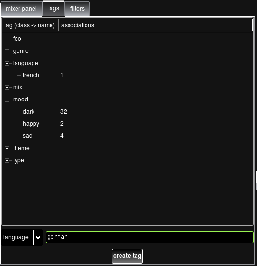
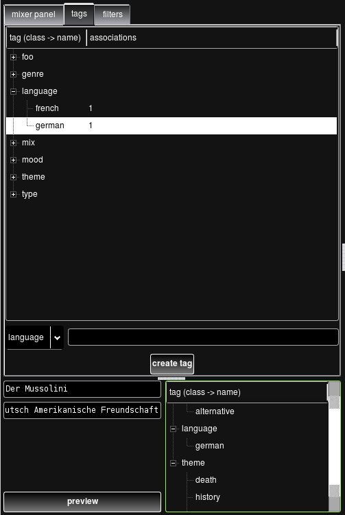

Data Jockey allows users to associate songs in their database with arbitrary textual 'tags'. Tags have a 'type', for instance 'genre,' or 'lyrical theme' and a value, like 'acid house,' or 'dancing.'
'genre' tags are automatically extracted from audio files [if they have embedded 'genre' information] when users import their files into the database using datajockey_importer.
Users can filter the view of the library through the user of tags. Users can tag works in a variety of different ways, based on qualities of the works or simply based on some attribute that users which to associate with their works. These tags and filter based on tags allow Data Jockey users to create their own, though somewhat basic, multi-layered organizational schemes.
Users can create new tags and tag types in the 'tags' tab of the main application, or using datajockey_annotator. The image below shows an example of a user creating a new 'language' tag with the value 'german.'

Users can then associate these tags with a particular work by selecting the work in the 'work list' and dragging/dropping the desired tag from the main 'tag list' into the 'tag list' associated with that particular work. The image below shows a work that has just been tagged with the 'german' 'language' tag.

Once works have been associated with 'tags,' users can filter their 'work list' to only display works with a specific tag. This can be achieved by: